OUTLINE(layer)white 7 · Continuous · 0.35 |
Building outer rectangle at the steel line. Rule: (0,0)→(LENGTH, WIDTH) from IF LENGTH,WIDTH. |
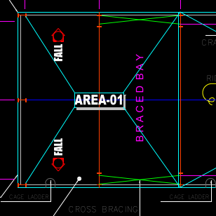 |
GRID-LINES(layer)green 3 · CENTER (dash-dot) · 0.09 |
Bay grid lines (vertical) + width lines at A & B. Rule: one per bay station from NUMBAYS/BAY1..n; stops at the bubble. |
|
grid-bubble(function · GRID + GRID-TEXT)green 3 outline · red 1 number |
PENTAGON (apex toward building) with number (top, 1..N) or letter (sides, A,B). Rule: one per grid station, r≈600. | 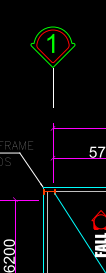 |
| grid-bubble (letter)(function)apex points → toward building | Width grid identifiers A, B down the left edge. | 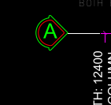 |
COLUMN(layer)red 1 · Continuous · 0.50 heavy |
I-section column symbol, red, heavy. Rule: at every grid node on A & B walls (+ interior per STYPE); web depth ≈ span/30. |
CROSS(layer · peb-draw-bracing)cyan 4 · DASHED/HIDDEN · 0.18 |
SINGLE full corner-to-corner X per braced bay (NSW↔FSW) — not a bowtie. Rule: braced bays = 2nd & 2nd-last (peb-braced-bays). |
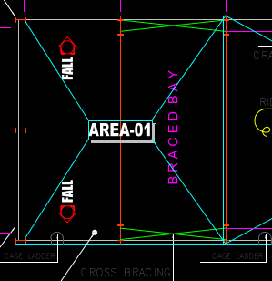 |
BRACED BAY label(text · SECONDARY)magenta 6 · vertical |
"B R A C E D B A Y" centred in each braced bay. | 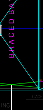 |
Bay dim chain(DIM)magenta 6 · arch tick · 0.13 |
Per-bay values + overall "BUILDING LENGTH : <L> CENTER TO CENTER OF STEEL COLUMN". Basis = C/C steel. | 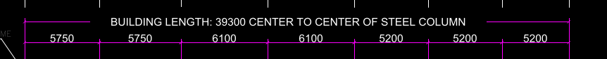 |
Width dim chain(DIM)magenta 6 · arch tick |
Module values + "BUILDING WIDTH : <W> C/C OF STEEL COLUMN", left side (mirrored right). | 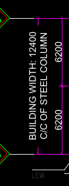 |
FALL marker(symbol + text)red 1 glyph + white text |
Red pentagon-house glyph + vertical "FALL" + slope arrow. Rule: one per roof slope at each end zone. | 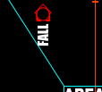 |
RIDGE LINE / CL OF RAFTER(MLEADER)LEADER · white 7 · filled arrow |
Native MLEADER labels on the ridge centreline / rafter. Single editable entities. | 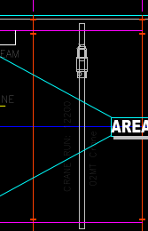 |
| Area tag(AREA)white box + text · red centre-line | Boxed "AREA-0N" at each area centre. Rule: one per IF area. | 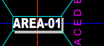 |
| Crane beam + symbol(CRANE)grey/white · only if IF crane | Runway line at mid-width + crane bridge symbol + "CRANE RUN : <span>" / "<cap> Crane". |
Plan title(text)blue 5 · large |
"COLUMN LAY-OUT PLAN", centred under the plan. | |
Title-block strip(TitleBlock)white 7 · border 4 · 0.50 |
Vertical right-edge Mammut strip: General Notes · design loads · project/customer/quote — all IF-linked. | 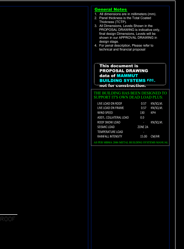 |